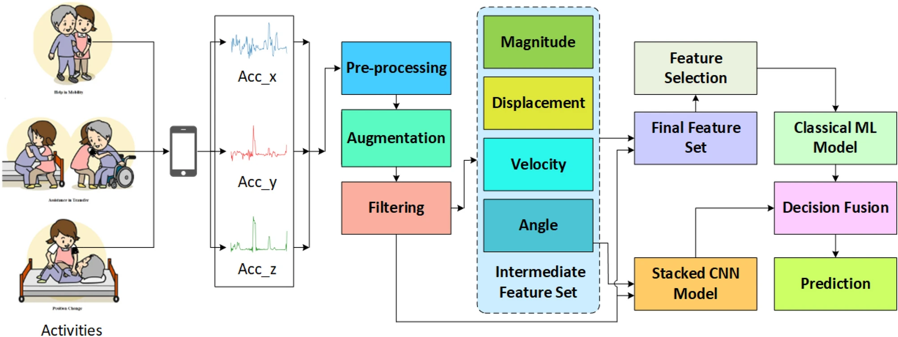

Scientific Reports, 2024
Nursing activity recognition with a stacked CNN and random forest ensemble
Research collaboration with Prof. Md Atiqur Rahman Ahad at the University of East London. The paper reports test accuracies of 70.6% and 85.7% on two nurse care activity datasets, and identifies which nurse performed an activity at up to 92.7% accuracy.
Read the paper